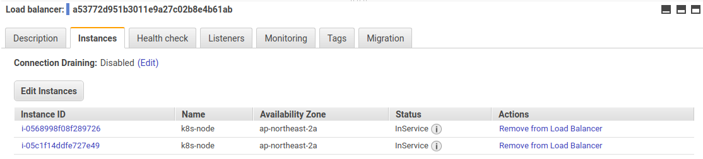

TGI Kubernetes 002: Networking and Services
2019-01-19
TGIK: Thanks God It’s Kubernetes
두 번째 에피소드는 네트워킹과 서비스에 관해 다룬다. 관련 링크나 노트는 없다.
결국, heptio-quickstart를 AWS에 올리고 따라해보았다. 아무래도 GCP UI나 커맨드라인 결과가 조금 다른 것으로 인해 혼란의 여지가 있을 것 같다. QuickStart이긴 하나, CloudFormation 기반으로 Kubernetes 컴포넌트들을 설치해가는 스크립트를 하나하나씩 살펴보는 것도 유의미해보인다.
Networking
먼저, 10개의 kuard Pod를 띄운다.
$ kubectl run --replicas=10 --image=gcr.io/kuar-demo/kuard-amd64:1 kuard
deployment.apps "kuard" created
$ kubectl get pods
NAME READY STATUS RESTARTS AGE
kuard-dbdd7955d-4kdbr 1/1 Running 0 13s
kuard-dbdd7955d-5r757 1/1 Running 0 13s
kuard-dbdd7955d-dhts5 1/1 Running 0 13s
kuard-dbdd7955d-hsl87 1/1 Running 0 13s
kuard-dbdd7955d-k8x7l 1/1 Running 0 13s
kuard-dbdd7955d-ms8hb 1/1 Running 0 13s
kuard-dbdd7955d-qfjbk 1/1 Running 0 13s
kuard-dbdd7955d-tfgdl 1/1 Running 0 13s
kuard-dbdd7955d-v8lj2 1/1 Running 0 13s
kuard-dbdd7955d-wzcf4 1/1 Running 0 13s
port-forward으로 실행 중인 kuard에 접속해본다.
$ kubectl port-forward kuard-dbdd7955d-4kdbr 8080:8080
그리고 해당 Pod의 쉘에 접속해서 호스트 이름과 IP 주소를 확인한다. 호스트 네임은 kuard-dbdd7955d-4kdbr이고, IP 주소는 192.168.3.140으로 확인된다.
$ kubectl exec -it kuard-dbdd7955d-4kdbr ash
~ $ hostname
kuard-dbdd7955d-4kdbr
~ $ ifconfig
eth0 Link encap:Ethernet HWaddr 4E:C8:47:58:DF:76
inet addr:192.168.3.140 Bcast:0.0.0.0 Mask:255.255.255.255
inet6 addr: fe80::4cc8:47ff:fe58:df76/64 Scope:Link
UP BROADCAST RUNNING MULTICAST MTU:1500 Metric:1
RX packets:8 errors:0 dropped:0 overruns:0 frame:0
TX packets:8 errors:0 dropped:1 overruns:0 carrier:0
collisions:0 txqueuelen:0
RX bytes:648 (648.0 B) TX bytes:648 (648.0 B)
lo Link encap:Local Loopback
inet addr:127.0.0.1 Mask:255.0.0.0
inet6 addr: ::1/128 Scope:Host
UP LOOPBACK RUNNING MTU:65536 Metric:1
RX packets:0 errors:0 dropped:0 overruns:0 frame:0
TX packets:0 errors:0 dropped:0 overruns:0 carrier:0
collisions:0 txqueuelen:1
RX bytes:0 (0.0 B) TX bytes:0 (0.0 B)
또는 다음과 같이 -o wide 옵션으로 Node와 Pod의 IP 주소를 같이 확인할 수 있다.
$ kubectl get pods -o wide
NAME READY STATUS RESTARTS AGE IP NODE
kuard-dbdd7955d-4kdbr 1/1 Running 0 2m 192.168.3.140 ip-10-0-8-254.ap-northeast-2.compute.internal
kuard-dbdd7955d-5r757 1/1 Running 0 2m 192.168.49.6 ip-10-0-8-176.ap-northeast-2.compute.internal
kuard-dbdd7955d-dhts5 1/1 Running 0 2m 192.168.49.9 ip-10-0-8-176.ap-northeast-2.compute.internal
kuard-dbdd7955d-hsl87 1/1 Running 0 2m 192.168.49.10 ip-10-0-8-176.ap-northeast-2.compute.internal
kuard-dbdd7955d-k8x7l 1/1 Running 0 2m 192.168.49.8 ip-10-0-8-176.ap-northeast-2.compute.internal
kuard-dbdd7955d-ms8hb 1/1 Running 0 2m 192.168.3.137 ip-10-0-8-254.ap-northeast-2.compute.internal
kuard-dbdd7955d-qfjbk 1/1 Running 0 2m 192.168.3.138 ip-10-0-8-254.ap-northeast-2.compute.internal
kuard-dbdd7955d-tfgdl 1/1 Running 0 2m 192.168.3.136 ip-10-0-8-254.ap-northeast-2.compute.internal
kuard-dbdd7955d-v8lj2 1/1 Running 0 2m 192.168.3.139 ip-10-0-8-254.ap-northeast-2.compute.internal
kuard-dbdd7955d-wzcf4 1/1 Running 0 2m 192.168.49.7 ip-10-0-8-176.ap-northeast-2.compute.internal
보다시피, Kubernetes에서 Pod은 자신의 고유 IP를 가지고 있고, Pod의 IP가 Node의 IP와는 다르다는 것에 주목한다. 이는 Kubernetes의 전신인 구글의 Borg 또는 Borg에서 영감을 받은 Mesos, 또는 단순히 여러 도커가 실행되는 기타 노드 클러스터와는 다른 점이라고 한다. Borg에서는 많은 워크로드들이 IP를 공유했었다고 한다. 이는 여러가지 문제와 복잡성을 야기했다. 이를 테면, IP를 공유하기 때문에 포트를 할당받을 수 있는데, Borg는 어느 컨테이너에 어떤 포트가 액세스하는지 알아야만 했고 관리가 복잡해졌다고 한다. 영상에서는 다소 길게 설명하고 있는데, Large-scale cluster management at Google with Borg 페이퍼의 8. Lessons and future work에서 다음과 같이 언급하고 있다.
One IP address per machine complicates things 머신마다 하나의 IP 주소가 일을 복잡하게 만든다. Borg에서 시스템의 모든 작업은 호스트의 단일 IP 주소를 사용하므로 호스트의 포트 공간을 공유한다. 이는 여러가지 어려움을 야기한다. Borg는 포트를 리소스로 예약해야 한다. 태스크는 필요한 포트 수를 미리 선언하고, 시작시 어떤 포트를 사용할 지 알아야만 한다. Linux 네임스페이스, VM, IPv6 및 소프트웨어 정의 네트워킹의 등장으로 인해 Kubernetes는 이러한 복잡성을 제거하는, 보다 사용자 친화적인 접근 방식을 취할 수 있다. 즉, 모든 포드 및 서비스는 고유한 IP 주소를 가지므로, 인프라에서 선택한 포트에 개발자의 소프트웨어를 맞추기 보다는 개발자가 포트를 선택할 수 있고, 포트 관리의 인프라 복잡성을 제거한다.
Note: Node IP는 다음과 같이 확인할 수 있다. type에는 ExternalIP 또는 InternalIP 등의 값으로 조회할 수 있다.
$ kubectl get nodes -o jsonpath='{.items[*].status.addresses[?(@.type=="InternalIP")].address}' | tr -s '[[:space:]]' '\n'
Pop간의 연결
Pod가 서로 고유한 IP 주소를 가지기 때문에, 다음과 같이 한 Pod(192.168.3.140)에서 다른 Pod(192.168.49.6)에 API 요청을 할 수 있다.
$ kubectl exec -it kuard-dbdd7955d-4kdbr ash
~ $ wget -O - 192.168.49.6:8080/env/api
Connecting to 192.168.49.6:8080 (192.168.49.6:8080)
{"commandLine":["/kuard"],"env":{"HOME":"/","HOSTNAME":"kuard-dbdd7955d-c48g5","KUBERNETES_PORT":"tcp://192.168.49.6:443","KUBERNETES_PORT_443_TCP":"tcp://92.168.49.6:443","KUBERNETES_PORT_443_TCP_ADDR":"192.168.49.6","KUBERNETES_PORT_443_TCP_PORT":"443","KUBERNETES_PORT_443_TCP_PROTO":"tcp","KUBERNETES_SERVICE_HOST":"192.168.49.6","KUBERNETES_SERVICE_PORT":"443","KUBERNETES_SERVICE_PORT_HTTPS":"443","PATH":"/usr/local/sbin:/usr/local/bin:/usr/sbin:/usr/bin:/sbin:/bin"}}
- 100% |*************************************************************************************************************************| 473 0:00:00 ETA
Node와 Pod간의 연결
다음으로, 마스터 노드에 SSH 접속하여 kubectl 명령의 동작 여부를 살펴본다.
SSH_KEY="~/.ssh/id_rsa"; ssh -i $SSH_KEY -o ProxyCommand="ssh -i \"${SSH_KEY}\" ubuntu@13.209.11.49 nc %h %p" ubuntu@10.0.23.3
$ kubectl get po -o wide
NAME READY STATUS RESTARTS AGE IP NODE NOMINATED NODE
kuard-dbdd7955d-4kdbr 1/1 Running 0 25m 192.168.3.140 ip-10-0-8-254.ap-northeast-2.compute.internal <none>
kuard-dbdd7955d-5r757 1/1 Running 0 25m 192.168.49.6 ip-10-0-8-176.ap-northeast-2.compute.internal <none>
kuard-dbdd7955d-dhts5 1/1 Running 0 25m 192.168.49.9 ip-10-0-8-176.ap-northeast-2.compute.internal <none>
kuard-dbdd7955d-hsl87 1/1 Running 0 25m 192.168.49.10 ip-10-0-8-176.ap-northeast-2.compute.internal <none>
kuard-dbdd7955d-k8x7l 1/1 Running 0 25m 192.168.49.8 ip-10-0-8-176.ap-northeast-2.compute.internal <none>
kuard-dbdd7955d-ms8hb 1/1 Running 0 25m 192.168.3.137 ip-10-0-8-254.ap-northeast-2.compute.internal <none>
kuard-dbdd7955d-qfjbk 1/1 Running 0 25m 192.168.3.138 ip-10-0-8-254.ap-northeast-2.compute.internal <none>
kuard-dbdd7955d-tfgdl 1/1 Running 0 25m 192.168.3.136 ip-10-0-8-254.ap-northeast-2.compute.internal <none>
kuard-dbdd7955d-v8lj2 1/1 Running 0 25m 192.168.3.139 ip-10-0-8-254.ap-northeast-2.compute.internal <none>
kuard-dbdd7955d-wzcf4 1/1 Running 0 25m 192.168.49.7 ip-10-0-8-176.ap-northeast-2.compute.internal <none>
다음과 같이 Node 인스턴스에서 Pod에 접속이 되는 것을 확인할 수 있다.
ubuntu@ip-10-0-23-3:~/.kube$ curl 192.168.3.140:8080/env/api
{"commandLine":["/kuard"],"env":{"HOME":"/","HOSTNAME":"kuard-dbdd7955d-4kdbr","KUBERNETES_PORT":"tcp://10.96.0.1:443","KUBERNETES_PORT_443_TCP":"tcp://10.96.0.1:443","KUBERNETES_PORT_443_TCP_ADDR":"10.96.0.1","KUBERNETES_PORT_443_TCP_PORT":"443","KUBERNETES_PORT_443_TCP_PROTO":"tcp","KUBERNETES_SERVICE_HOST":"10.96.0.1","KUBERNETES_SERVICE_PORT":"443","KUBERNETES_SERVICE_PORT_HTTPS":"443","PATH":"/usr/local/sbin:/usr/local/bin:/usr/sbin:/usr/bin:/sbin:/bin"}}
Note: 2017년 데모에서는 KUBECONFIG 파일의 명시해주고 있는데, 현재 버전에서는 마스터 노드 홈디렉토리에 ~/.kube/config 파일이 존재한다. kubeadm v1.8.0부터 kubeadm은 클러스터 구성을 kube-system 네임 스페이스의 kubeadm-config라는 ConfigMap에 업로드하고 나중에 업그레이드 할 때 ConfigMap을 읽는다. 그리고 어드민 설정 정보는 /etc/kubernetes/admin.confg 파일에 기록된다.
- ~/.kube/config
- /etc/kubernetes/admin.config
데모 영상에 나온 질문 몇가지에 대한 답변을 다음과 같이 간단히 요약하였다.
- AWS 네이티브 라우팅을 이용해서 Kubernetes 클러스터의 노드가 아니어도 클러스터 네트워크에 조인하여 연결될 수 있다.
- Pod을 일반적인 호스트처럼 바로 IP 어드레싱을 할 수 있지만, 대부분 Service나 Isto 서비스 메쉬를 통한다. 물론, Service 없이 할 수도 있다. 그러나 자체의 진보된 서비스 디스커버리 매커니즘이 필요할 것이다.
CNI
다음으로 CNI에 대해 설명하고 잇다. CNI는 Kubernetes 컨텍스트가 아니더라도, 많은 컨테이너가 있고 그들 사이의 네트워킹을 구성해야 한다면, 표준 인터페이스로 사용할 수 있다.
다음과 같이 CloudFormation에 명시한 Calico 플러그인 정보는 아래 경로에서 확인할 수 있다.
ubuntu@ip-10-0-23-3:~$ cd /etc/cni/net.d/
ubuntu@ip-10-0-23-3:/etc/cni/net.d$ ls
10-calico.conflist calico-kubeconfig
10-calico.conflist을 보면, Pod 네트워크에 Calio 플러그인을 사용할 것을 명시하고 있다. IPAM 주소 관리는 calico-ipam을 사용한다.
ubuntu@ip-10-0-23-3:/etc/cni/net.d$ cat 10-calico.conflist
{
"name": "k8s-pod-network",
"cniVersion": "0.3.0",
"plugins": [
{
"type": "calico",
"log_level": "info",
"etcd_endpoints": "http://10.96.232.136:6666",
"mtu": 1500,
"ipam": {
"type": "calico-ipam"
},
"policy": {
"type": "k8s"
},
"kubernetes": {
"kubeconfig": "/etc/cni/net.d/calico-kubeconfig"
}
},
{
"type": "portmap",
"snat": true,
"capabilities": {"portMappings": true}
}
]
}
calico API를 호출시 사용되는 Kubernetes 설정 내용이다.
ubuntu@ip-10-0-23-3:/etc/cni/net.d$ sudo cat calico-kubeconfig
# Kubeconfig file for Calico CNI plugin.
apiVersion: v1
kind: Config
clusters:
- name: local
cluster:
server: https://[10.96.0.1]:443
certificate-authority-data: LS0tLS1CRUdJTiBDRVJUSUZJQ0FURS0tLS0tCk1JS...S0tLQo=
users:
- name: calico
user:
token: "eyJhbGciOiJSUzI1NiIsImtpZCI6IiJ9.eyJpc..."
contexts:
- name: calico-context
context:
cluster: local
user: calico
current-context: calico-context
컨테이너로 해야할 어떤 작업이 있을 때마다 플러그인이 호출된다고 한다. 컨테이너의 여러 인터페이스에 대해 여러 개의 플러그인을 구성할 수 있다. 예를 들면, 컨테이너를 런칭할 때, 도커는 내부에 네트워크 네임스페이스를 셋업하는데, CNI는 도커의 모든 네트워크 설정을 가져와 도커와 마찬가지로 네임스페이스 설정을 한 뒤에 Kubernetes의 플러그형 시스템으로 확장하는 역할을 한다고 한다. (CNI에 대해 좀 더 기대했으나 위와 같이 간략하게 설명하고 있다.)
/opt/cni/bin으로 이동하면, 여러가지 CNI 배포 패키지들을 볼 수 있다.
ubuntu@ip-10-0-23-3: cd /opt/cni/bin
ubuntu@ip-10-0-23-3:/opt/cni/bin$ ls
bridge calico calico-ipam dhcp flannel host-local ipvlan loopback macvlan portmap ptp sample tuning vlan
calico를 실행해보자.
ubuntu@ip-10-0-23-3:/opt/cni/bin$ ./calico
CNI_COMMAND env variable missing
{
"code": 100,
"msg": "required env variables missing"
}
에러를 반환한다. 위에서 보다시피 CNI에 대한 API 호출은 여러가지 환경설정 변수를 넘겨주는데, CNI는 다른 UNIX 네트워킹 프로세스를 셋업할 수 있는 API 호출이라는 것을 알 수 있다.
Service
다음 명령은 type이 LoadBalancer이고, 이름이 kuard인 Service를 생성하여 Kubernetes 클러스터 내의 Pod을 클러스터 외부 로드 밸런서와 연결시킨다.
$ kubectl expose deployment kuard --type=LoadBalancer --target-port=8080 --port=80
Service와 Pop은 서로에 대해 알지 못하나 Pod의 label로 Service와 Pod이 서로 코디네이션된다. (label을 통해 매핑되는 Service와 Pod의 메카니즘에 대해 설명하고 있는 자료가 이미 많으므로 넘어가기로 한다.)
서비스에는 다음과 같이 4가지 타입이 있다.
- ExternalName
- None
- ClusterIP
- NodePort
- LoadBalancer
ExternalName
ExternalName 타입은 Kubernetes의 자체 서비스 디스커버리을 사용하되, Kubernetes 외부의 이름을 가리키는 Service를 생성한다. Kubernetes 내부와 외부를 매핑시켜줄 때 사용한다. (알다시피, external-dns를 애드온을 연동하게 되면 AWS, GCP 등의 DNS와 매핑된다.)
None
Service 타입이 None인 경우는 named label query가 되는 기저 레벨이라고 볼 수 있다.
None 타입으로 선언한 Service의 내용은 다음과 같이 확인할 수 있다.
$ kubectl expose deployment kuard --type=None --target-port=8080 --port=80 -o yaml --dry-run
type의 값이 None이고 이름이 kuard인 Service이다.
apiVersion: v1
kind: Service
metadata:
creationTimestamp: null
labels:
run: kuard
name: kuard
spec:
ports:
- port: 80
protocol: TCP
targetPort: 8080
selector:
run: kuard
type: None
status:
loadBalancer: {}
그리고 Kubernetes 상에서 kuard라는 Service는 다음과 같은 Endpoints로 디코딩된다.
# $ kubectl get endpoints kuard
apiVersion: v1
kind: Endpoints
metadata:
creationTimestamp: 2019-01-18T07:57:55Z
labels:
run: kuard
name: kuard
namespace: default
resourceVersion: "10106"
selfLink: /api/v1/namespaces/default/endpoints/kuard
uid: c395caf3-1af6-11e9-befa-0209e53cf850
subsets:
- addresses:
- ip: 192.168.3.136
nodeName: ip-10-0-8-254.ap-northeast-2.compute.internal
targetRef:
kind: Pod
name: kuard-dbdd7955d-tfgdl
namespace: default
resourceVersion: "1935"
uid: 411010f3-1ae9-11e9-befa-0209e53cf850
- ip: 192.168.3.137
nodeName: ip-10-0-8-254.ap-northeast-2.compute.internal
targetRef:
kind: Pod
name: kuard-dbdd7955d-ms8hb
namespace: default
resourceVersion: "1938"
uid: 4108db60-1ae9-11e9-befa-0209e53cf850
- ip: 192.168.3.138
nodeName: ip-10-0-8-254.ap-northeast-2.compute.internal
targetRef:
kind: Pod
name: kuard-dbdd7955d-qfjbk
namespace: default
resourceVersion: "1949"
uid: 410b40b7-1ae9-11e9-befa-0209e53cf850
- ip: 192.168.3.139
nodeName: ip-10-0-8-254.ap-northeast-2.compute.internal
targetRef:
kind: Pod
name: kuard-dbdd7955d-v8lj2
namespace: default
resourceVersion: "1965"
uid: 41102fed-1ae9-11e9-befa-0209e53cf850
- ip: 192.168.3.140
nodeName: ip-10-0-8-254.ap-northeast-2.compute.internal
targetRef:
kind: Pod
name: kuard-dbdd7955d-4kdbr
namespace: default
resourceVersion: "1982"
uid: 411761d7-1ae9-11e9-befa-0209e53cf850
- ip: 192.168.49.10
nodeName: ip-10-0-8-176.ap-northeast-2.compute.internal
targetRef:
kind: Pod
name: kuard-dbdd7955d-hsl87
namespace: default
resourceVersion: "1985"
uid: 41177ccd-1ae9-11e9-befa-0209e53cf850
- ip: 192.168.49.6
nodeName: ip-10-0-8-176.ap-northeast-2.compute.internal
targetRef:
kind: Pod
name: kuard-dbdd7955d-5r757
namespace: default
resourceVersion: "1952"
uid: 41102166-1ae9-11e9-befa-0209e53cf850
- ip: 192.168.49.7
nodeName: ip-10-0-8-176.ap-northeast-2.compute.internal
targetRef:
kind: Pod
name: kuard-dbdd7955d-wzcf4
namespace: default
resourceVersion: "1962"
uid: 41178be2-1ae9-11e9-befa-0209e53cf850
- ip: 192.168.49.8
nodeName: ip-10-0-8-176.ap-northeast-2.compute.internal
targetRef:
kind: Pod
name: kuard-dbdd7955d-k8x7l
namespace: default
resourceVersion: "1969"
uid: 410b5dad-1ae9-11e9-befa-0209e53cf850
- ip: 192.168.49.9
nodeName: ip-10-0-8-176.ap-northeast-2.compute.internal
targetRef:
kind: Pod
name: kuard-dbdd7955d-dhts5
namespace: default
resourceVersion: "1977"
uid: 410ff0b5-1ae9-11e9-befa-0209e53cf850
ports:
- port: 8080
protocol: TCP
보다시피 kuard 엔드포인트의 프로토콜은 TCP, 포트는 8080,그리고 kuard Pod에 대한 여러 IP 주소의 집합으로 구성되어 있다. Pop의 헬스체크로 인해 Pod이 죽었다고 판단될 경우, 엔드포인트에서는 보이지 않게 된다. 즉, 일종의 Sanity Filtering이 동작하는 것으로, 서비스 디스커버리가 동작하는 기본적인 메카니즘이라 할 수 있다.
ClusterIP
현재 kuard Service를 보면, clusterIP는 10.97.169.67로 잡혀 있다. 이는 가상 IP이고, 서비스의 라이프사이클 동안 변하지 않는다.
# kubectl get svc kuard -o yaml
apiVersion: v1
kind: Service
metadata:
creationTimestamp: 2019-01-18T13:22:28Z
labels:
run: kuard
name: kuard
namespace: default
resourceVersion: "7842"
selfLink: /api/v1/namespaces/default/services/kuard
uid: 1a7df4fb-1b24-11e9-a27c-02b8e4b61ab8
spec:
clusterIP: 10.97.169.67
externalTrafficPolicy: Cluster
ports:
- nodePort: 31986
port: 80
protocol: TCP
targetPort: 8080
selector:
run: kuard
sessionAffinity: None
type: LoadBalancer
status:
loadBalancer:
ingress:
- hostname: a1a7df4fb1b2411e9a27c02b8e4b61ab-1083762423.ap-northeast-2.elb.amazonaws.com
좀 더 자세히 알아보기 위해, 클러스터 마스터 내부에 접속한다.
$ SSH_KEY="~/.ssh/id_rsa"; ssh -i $SSH_KEY -A -L8080:localhost:8080 -o ProxyCommand="ssh -i \"${SSH_KEY}\" ubuntu@13.125.51.126 nc %h %p" ubuntu@10.0.18.181
###############################################################
# _ _ _ _ _ ___ #
# | | | | ___ _ __ | |_(_) ___ | | _( _ ) ___ #
# | |_| |/ _ \ '_ \| __| |/ _ \ | |/ / _ \/ __| #
# | _ | __/ |_) | |_| | (_) | | < (_) \__ \ #
# |_| |_|\___| .__/ \__|_|\___/ |_|\_\___/|___/ #
# |_| #
# ___ _ _ ____ _ _ #
# / _ \ _ _(_) ___| | __/ ___|| |_ __ _ _ __| |_ #
# | | | | | | | |/ __| |/ /\___ \| __/ _` | '__| __| #
# | |_| | |_| | | (__| < ___) | || (_| | | | |_ #
# \__\_\\__,_|_|\___|_|\_\|____/ \__\__,_|_| \__| #
# #
###############################################################
Welcome to Ubuntu 16.04.5 LTS (GNU/Linux 4.4.0-1072-aws x86_64)
* Documentation: https://help.ubuntu.com
* Management: https://landscape.canonical.com
* Support: https://ubuntu.com/advantage
Get cloud support with Ubuntu Advantage Cloud Guest:
http://www.ubuntu.com/business/services/cloud
This system has been minimized by removing packages and content that are
not required on a system that users do not log into.
To restore this content, you can run the 'unminimize' command.
38 packages can be updated.
0 updates are security updates.
New release '18.04.1 LTS' available.
Run 'do-release-upgrade' to upgrade to it.
*** System restart required ***
ubuntu@ip-10-0-18-181:~$
위와 같이 마스터 노드에 진입해서 kube-system 네임스페이스의 Pod을 조회하면, 각 노드마다 kube-proxy라는 DaemonSet이 실행 중인 것을 알 수 있다.
ubuntu@ip-10-0-18-181:~$ kubectl get pod --namespace=kube-system
NAME READY STATUS RESTARTS AGE
calico-etcd-twh4d 1/1 Running 0 2h
calico-kube-controllers-b798bfc9c-qzdzn 1/1 Running 0 2h
calico-node-b7w5v 2/2 Running 0 2h
calico-node-bxhxx 2/2 Running 2 1h
calico-node-smrvg 2/2 Running 2 1h
coredns-78fcdf6894-fpt2m 1/1 Running 0 2h
coredns-78fcdf6894-m2zsn 1/1 Running 0 2h
etcd-ip-10-0-18-181.ap-northeast-2.compute.internal 1/1 Running 0 1h
kube-apiserver-ip-10-0-18-181.ap-northeast-2.compute.internal 1/1 Running 0 1h
kube-controller-manager-ip-10-0-18-181.ap-northeast-2.compute.internal 1/1 Running 0 1h
kube-proxy-f9q76 1/1 Running 0 1h
kube-proxy-m5sqz 1/1 Running 0 1h
kube-proxy-pnxwv 1/1 Running 0 1h
kube-scheduler-ip-10-0-18-181.ap-northeast-2.compute.internal 1/1 Running 0 1h
kubernetes-dashboard-84fff45879-cmmtp 1/1 Running 0 2h
kube-proxy의 메커니즘은 다음과 같다. kube-proxy는 ClusterIP를 지닌 모든 Service를 모니터링한다. 그리고 연관된 EndPoint 변경을 따라 iptable을 구성하고, 해당 iptable을 사용해서 ClusterIP를 통하는 모든 트래픽이 해당하는 엔드포인트에 랜덤하게 로드 밸런싱되게 한다.
iptable을 살펴보자. calico가 관리하는 iptable은 cali라고 주석이 달려 있다.
Chain FORWARD (policy DROP)
target prot opt source destination
cali-FORWARD all – anywhere anywhere /* cali:wUHhoiAYhphO9Mso */
KUBE-FORWARD all – anywhere anywhere /* kubernetes forwarding rules */
DOCKER-ISOLATION all – anywhere anywhere
DOCKER all – anywhere anywhere
ACCEPT all – anywhere anywhere ctstate RELATED,ESTABLISHED
ACCEPT all – anywhere anywhere
ACCEPT all – anywhere anywhere
Chain OUTPUT (policy ACCEPT)
target prot opt source destination
cali-OUTPUT all – anywhere anywhere /* cali:tVnHkvAo15HuiPy0 */
KUBE-SERVICES all – anywhere anywhere ctstate NEW /* kubernetes service portals */
KUBE-FIREWALL all – anywhere anywhere
Chain DOCKER (1 references) target prot opt source destination
Chain DOCKER-ISOLATION (1 references)
target prot opt source destination
RETURN all – anywhere anywhere
Chain KUBE-EXTERNAL-SERVICES (1 references) target prot opt source destination
Chain KUBE-FIREWALL (2 references)
target prot opt source destination
DROP all – anywhere anywhere /* kubernetes firewall for dropping marked packets */ mark match 0x8000/0x8000
Chain KUBE-FORWARD (1 references)
target prot opt source destination
ACCEPT all – anywhere anywhere /* kubernetes forwarding rules */ mark match 0x4000/0x4000
ACCEPT all – ip-192-168-0-0.ap-northeast-2.compute.internal/16 anywhere /* kubernetes forwarding conntrack pod source rule */ ctstate RELATED,ESTABLISHED
ACCEPT all – anywhere ip-192-168-0-0.ap-northeast-2.compute.internal/16 /* kubernetes forwarding conntrack pod destination rule */ ctstate RELATED,ESTABLISHED
Chain KUBE-SERVICES (1 references) target prot opt source destination
Chain cali-FORWARD (1 references)
target prot opt source destination
MARK all – anywhere anywhere /* cali:vjrMJCRpqwy5oRoX */ MARK and 0xfff1ffff
cali-from-hep-forward all – anywhere anywhere /* cali:A_sPAO0mcxbT9mOV */ mark match 0x0/0x10000
cali-from-wl-dispatch all – anywhere anywhere /* cali:8ZoYfO5HKXWbB3pk */
cali-to-wl-dispatch all – anywhere anywhere /* cali:jdEuaPBe14V2hutn */
cali-to-hep-forward all – anywhere anywhere /* cali:12bc6HljsMKsmfr- */
ACCEPT all – anywhere anywhere /* cali:MH9kMp5aNICL-Olv */ /* Policy explicitly accepted packet. */ mark match 0x10000/0x10000
Chain cali-INPUT (1 references)
target prot opt source destination
ACCEPT all – anywhere anywhere /* cali:msRIDfJRWnYwzW4g */ mark match 0x10000/0x10000
ACCEPT ipencap– anywhere anywhere /* cali:1IRlRis1-pHsGnX5 */ /* Allow IPIP packets from Calico hosts */ match-set cali40all-hosts-net src ADDRTYPE match dst-type LOCAL
DROP ipencap– anywhere anywhere /* cali:jX63A0VGotRJWnUL */ /* Drop IPIP packets from non-Calico hosts */
cali-wl-to-host all – anywhere anywhere [goto] /* cali:Dit8xicL3zTIYYlp */
MARK all – anywhere anywhere /* cali:LCGWUV2ju3tJmfW0 */ MARK and 0xfff0ffff
cali-from-host-endpoint all – anywhere anywhere /* cali:x-gEznubq2huN2Fo */
ACCEPT all – anywhere anywhere /* cali:m27NaAhoKHLs1plD */ /* Host endpoint policy accepted packet. */ mark match 0x10000/0x10000
Chain cali-OUTPUT (1 references)
target prot opt source destination
ACCEPT all – anywhere anywhere /* cali:Mq1_rAdXXH3YkrzW */ mark match 0x10000/0x10000
RETURN all – anywhere anywhere /* cali:69FkRTJDvD5Vu6Vl */
ACCEPT ipencap– anywhere anywhere /* cali:AnEsmO6bDZbQntWW */ /* Allow IPIP packets to other Calico hosts */ match-set cali40all-hosts-net dst ADDRTYPE match src-type LOCAL
MARK all – anywhere anywhere /* cali:9e9Uf3GU5tX–Lxy */ MARK and 0xfff0ffff
cali-to-host-endpoint all – anywhere anywhere /* cali:OB2pzPrvQn6PC89t */
ACCEPT all – anywhere anywhere /* cali:tvSSMDBWrme3CUqM */ /* Host endpoint policy accepted packet. */ mark match 0x10000/0x10000
Chain cali-failsafe-in (0 references)
target prot opt source destination
ACCEPT tcp – anywhere anywhere /* cali:wWFQM43tJU7wwnFZ */ multiport dports ssh
ACCEPT udp – anywhere anywhere /* cali:LwNV–R8MjeUYacw */ multiport dports bootpc
ACCEPT tcp – anywhere anywhere /* cali:QOO5NUOqOSS1_Iw0 */ multiport dports bgp
ACCEPT tcp – anywhere anywhere /* cali:cwZWoBSwVeIAZmVN */ multiport dports 2379
ACCEPT tcp – anywhere anywhere /* cali:7FbNXT91kugE_upR */ multiport dports 2380
ACCEPT tcp – anywhere anywhere /* cali:ywE9WYUBEpve70WT */ multiport dports 6666
ACCEPT tcp – anywhere anywhere /* cali:l-WQSVBf_lygPR0J */ multiport dports ircd
Chain cali-failsafe-out (0 references)
target prot opt source destination
ACCEPT udp – anywhere anywhere /* cali:82hjfji-wChFhAqL */ multiport dports domain
ACCEPT udp – anywhere anywhere /* cali:TNM3RfEjbNr72hgH */ multiport dports bootps
ACCEPT tcp – anywhere anywhere /* cali:ycxKitIl4u3dK0HR */ multiport dports bgp
ACCEPT tcp – anywhere anywhere /* cali:hxjEWyxdkXXkdvut */ multiport dports 2379
ACCEPT tcp – anywhere anywhere /* cali:cA_GLtruuvG88KiO */ multiport dports 2380
ACCEPT tcp – anywhere anywhere /* cali:Sb1hkLYFMrKS6r01 */ multiport dports 6666
ACCEPT tcp – anywhere anywhere /* cali:UwLSebGONJUG4yG- */ multiport dports ircd
Chain cali-from-hep-forward (1 references) target prot opt source destination
Chain cali-from-host-endpoint (1 references) target prot opt source destination
Chain cali-from-wl-dispatch (2 references)
target prot opt source destination
cali-fw-cali82a8bb394bd all – anywhere anywhere [goto] /* cali:iec6Icru0K37idwj */
cali-fw-calie930c422661 all – anywhere anywhere [goto] /* cali:0jlZAcGo54oqY8p3 */
cali-fw-calif3533dd3229 all – anywhere anywhere [goto] /* cali:PUv0YBkan3WHQZix */
DROP all – anywhere anywhere /* cali:-ojO7WWmz0kbfddZ */ /* Unknown interface */
Chain cali-fw-cali82a8bb394bd (1 references)
target prot opt source destination
ACCEPT all – anywhere anywhere /* cali:rEFkHFBfSpqnudiF */ ctstate RELATED,ESTABLISHED
DROP all – anywhere anywhere /* cali:cMimONNlTtpLzwFn */ ctstate INVALID
MARK all – anywhere anywhere /* cali:ScMWqdtSYj6jUbqB */ MARK and 0xfffeffff
cali-pro-kns.kube-system all – anywhere anywhere /* cali:fcyxR3eYmhq2xDwn */
RETURN all – anywhere anywhere /* cali:XkAXtVVx5l-JkBR_ */ /* Return if profile accepted */ mark match 0x10000/0x10000
cali-pro-_u2Tn2rSoAPffvE7JO6 all – anywhere anywhere /* cali:gHae-WfoqhPTeoWZ */
RETURN all – anywhere anywhere /* cali:kFr4XE5funBdyddk */ /* Return if profile accepted */ mark match 0x10000/0x10000
DROP all – anywhere anywhere /* cali:XGKyCDMWXBQivuzk */ /* Drop if no profiles matched */
Chain cali-fw-calie930c422661 (1 references)
target prot opt source destination
ACCEPT all – anywhere anywhere /* cali:9GO__AFzeIKKpkC3 */ ctstate RELATED,ESTABLISHED
DROP all – anywhere anywhere /* cali:PJ-pgay_zq2Qslnb */ ctstate INVALID
MARK all – anywhere anywhere /* cali:ogTm-kn-NPg6zYsd */ MARK and 0xfffeffff
cali-pro-kns.kube-system all – anywhere anywhere /* cali:MR5-EG6LT-4FQVHs */
RETURN all – anywhere anywhere /* cali:eSbE3QKgYjrONve7 */ /* Return if profile accepted */ mark match 0x10000/0x10000
cali-pro-_be-1GnaHI4zA9ZiNqb all – anywhere anywhere /* cali:M1HNVqvcGyE94Nvw */
RETURN all – anywhere anywhere /* cali:jGOTAMwTGCI4OWPX */ /* Return if profile accepted */ mark match 0x10000/0x10000
DROP all – anywhere anywhere /* cali:LOtk7YMg5IrVV3BH */ /* Drop if no profiles matched */
Chain cali-fw-calif3533dd3229 (1 references)
target prot opt source destination
ACCEPT all – anywhere anywhere /* cali:YH57UrJxw-tOmJKr */ ctstate RELATED,ESTABLISHED
DROP all – anywhere anywhere /* cali:IE-8xOX07E7Owz-K */ ctstate INVALID
MARK all – anywhere anywhere /* cali:jVx41uBbKJHbN4OU */ MARK and 0xfffeffff
cali-pro-kns.kube-system all – anywhere anywhere /* cali:UYWxLdAe9bsLem-b */
RETURN all – anywhere anywhere /* cali:LtqfyPifkDfH-orx */ /* Return if profile accepted */ mark match 0x10000/0x10000
cali-pro-_u2Tn2rSoAPffvE7JO6 all – anywhere anywhere /* cali:mr7YiskIpUpprX35 */
RETURN all – anywhere anywhere /* cali:O0-SshHUwmCNJ8Cx */ /* Return if profile accepted */ mark match 0x10000/0x10000
DROP all – anywhere anywhere /* cali:_NyR6RmRKEMmc0Sr */ /* Drop if no profiles matched */
Chain cali-pi-_vOsBt0qc8GM-JXGkiMn (1 references) target prot opt source destination
Chain cali-po-_vOsBt0qc8GM-JXGkiMn (0 references) target prot opt source destination
Chain cali-pri-_be-1GnaHI4zA9ZiNqb (1 references)
target prot opt source destination
DROP all – anywhere anywhere /* cali:YrXwxizPmMHbIOcu */
Chain cali-pri-_u2Tn2rSoAPffvE7JO6 (2 references)
target prot opt source destination
DROP all – anywhere anywhere /* cali:3WowQ2oY88d3FWSg */
Chain cali-pri-kns.kube-system (3 references)
target prot opt source destination
MARK all – anywhere anywhere /* cali:zoH5gU6U55FKZxEo */ MARK or 0x10000
RETURN all – anywhere anywhere /* cali:bcGRIJcyOS9dgBiB */ mark match 0x10000/0x10000
Chain cali-pro-_be-1GnaHI4zA9ZiNqb (1 references)
target prot opt source destination
DROP all – anywhere anywhere /* cali:KGqIRWRYnPNtm88p */
Chain cali-pro-_u2Tn2rSoAPffvE7JO6 (2 references)
target prot opt source destination
DROP all – anywhere anywhere /* cali:7uaZJ8EAWrfkGzjv */
Chain cali-pro-kns.kube-system (3 references)
target prot opt source destination
MARK all – anywhere anywhere /* cali:-50oJuMfLVO3LkBk */ MARK or 0x10000
RETURN all – anywhere anywhere /* cali:ztVPKv1UYejNzm1g */ mark match 0x10000/0x10000
Chain cali-to-hep-forward (1 references) target prot opt source destination
Chain cali-to-host-endpoint (1 references) target prot opt source destination
Chain cali-to-wl-dispatch (1 references)
target prot opt source destination
cali-tw-cali82a8bb394bd all – anywhere anywhere [goto] /* cali:DH1bLyxskFJok8LY */
cali-tw-calie930c422661 all – anywhere anywhere [goto] /* cali:v4KHY3mc1Ym9DiZc */
cali-tw-calif3533dd3229 all – anywhere anywhere [goto] /* cali:Z6Ww2zhhGbh19h6K */
DROP all – anywhere anywhere /* cali:EuaJOevUVXhWjfo- */ /* Unknown interface */
Chain cali-tw-cali82a8bb394bd (1 references)
target prot opt source destination
ACCEPT all – anywhere anywhere /* cali:vrhTi3Nw7kE6Ef5t */ ctstate RELATED,ESTABLISHED
DROP all – anywhere anywhere /* cali:jG_UsyATyr-kJ6AQ */ ctstate INVALID
MARK all – anywhere anywhere /* cali:FerW_RRGXaa36-vj */ MARK and 0xfffeffff
cali-pri-kns.kube-system all – anywhere anywhere /* cali:YKrxQCxGe4eaqLap */
RETURN all – anywhere anywhere /* cali:wfbQVtfm0N1ND8R0 */ /* Return if profile accepted */ mark match 0x10000/0x10000
cali-pri-_u2Tn2rSoAPffvE7JO6 all – anywhere anywhere /* cali:9PkEFe9LRMPxCP4K */
RETURN all – anywhere anywhere /* cali:i-PGBuetIpieXaJ8 */ /* Return if profile accepted */ mark match 0x10000/0x10000
DROP all – anywhere anywhere /* cali:43EsNrcTxe_Gut6O */ /* Drop if no profiles matched */
Chain cali-tw-calie930c422661 (1 references)
target prot opt source destination
ACCEPT all – anywhere anywhere /* cali:tkJMJT3XRZeM-2Gg */ ctstate RELATED,ESTABLISHED
DROP all – anywhere anywhere /* cali:hBXm_jQ4g-vOXrvD */ ctstate INVALID
MARK all – anywhere anywhere /* cali:wQ2uqXWFYbTHdTqX */ MARK and 0xfffeffff
MARK all – anywhere anywhere /* cali:YlnF0m9DiQACjY09 */ /* Start of policies */ MARK and 0xfffdffff
cali-pi-_vOsBt0qc8GM-JXGkiMn all – anywhere anywhere /* cali:0LpzqkQs2SGOS_wo */ mark match 0x0/0x20000
RETURN all – anywhere anywhere /* cali:xr1W-9np6ixXUzOe */ /* Return if policy accepted */ mark match 0x10000/0x10000
DROP all – anywhere anywhere /* cali:DyuQ1f19JvhahmR7 */ /* Drop if no policies passed packet */ mark match 0x0/0x20000
cali-pri-kns.kube-system all – anywhere anywhere /* cali:566-vQl_FY43wHvx */
RETURN all – anywhere anywhere /* cali:XeFMO_8xxORT_IXy */ /* Return if profile accepted */ mark match 0x10000/0x10000
cali-pri-_be-1GnaHI4zA9ZiNqb all – anywhere anywhere /* cali:83QDy1HEQkh-KMXt */
RETURN all – anywhere anywhere /* cali:XXlZXzitmj5-clZc */ /* Return if profile accepted */ mark match 0x10000/0x10000
DROP all – anywhere anywhere /* cali:ZMgyCtJ9dKOGThG0 */ /* Drop if no profiles matched */
Chain cali-tw-calif3533dd3229 (1 references)
target prot opt source destination
ACCEPT all – anywhere anywhere /* cali:Jp5FpTzoIYgEzVhI */ ctstate RELATED,ESTABLISHED
DROP all – anywhere anywhere /* cali:OS4FQ7GDf9nqPGuo */ ctstate INVALID
MARK all – anywhere anywhere /* cali:U8S5KlI4JDCzJT2L */ MARK and 0xfffeffff
cali-pri-kns.kube-system all – anywhere anywhere /* cali:N7mCGC3NJKTvWJ2_ */
RETURN all – anywhere anywhere /* cali:cags8BdhUzZKkCtV */ /* Return if profile accepted */ mark match 0x10000/0x10000
cali-pri-_u2Tn2rSoAPffvE7JO6 all – anywhere anywhere /* cali:LNHtw-GrC3bM44iL */
RETURN all – anywhere anywhere /* cali:EhyfxW1SBfAAy2Ec */ /* Return if profile accepted */ mark match 0x10000/0x10000
DROP all – anywhere anywhere /* cali:tV1eFXrUQA4xEfFW */ /* Drop if no profiles matched */
Chain cali-wl-to-host (1 references)
target prot opt source destination
cali-from-wl-dispatch all – anywhere anywhere /* cali:Ee9Sbo10IpVujdIY */
ACCEPT all – anywhere anywhere /* cali:nSZbcOoG1xPONxb8 */ /* Configured DefaultEndpointToHostAction */
</details>
다음으로, 포워딩 테이블을 살펴보자.
```shell
$ iptables-save | less
...
-A KUBE-SERVICES ! -s 192.168.0.0/16 -d 10.96.0.10/32 -p tcp -m comment --comment "kube-system/kube-dns:dns-tcp cluster IP" -m tcp --dport 53 -j KUBE-MARK-MASQ
-A KUBE-SERVICES -d 10.96.0.10/32 -p tcp -m comment --comment "kube-system/kube-dns:dns-tcp cluster IP" -m tcp --dport 53 -j KUBE-SVC-ERIFXISQEP7F7OF4
-A KUBE-SERVICES ! -s 192.168.0.0/16 -d 10.96.232.136/32 -p tcp -m comment --comment "kube-system/calico-etcd: cluster IP" -m tcp --dport 6666 -j KUBE-MARK-MASQ
-A KUBE-SERVICES -d 10.96.232.136/32 -p tcp -m comment --comment "kube-system/calico-etcd: cluster IP" -m tcp --dport 6666 -j KUBE-SVC-NTYB37XIWATNM25Y
-A KUBE-SERVICES ! -s 192.168.0.0/16 -d 10.98.144.55/32 -p tcp -m comment --comment "kube-system/kubernetes-dashboard: cluster IP" -m tcp --dport 443 -j KUBE-MARK-MASQ
-A KUBE-SERVICES -d 10.98.144.55/32 -p tcp -m comment --comment "kube-system/kubernetes-dashboard: cluster IP" -m tcp --dport 443 -j KUBE-SVC-XGLOHA7QRQ3V22RZ
-A KUBE-SERVICES ! -s 192.168.0.0/16 -d 10.97.169.67/32 -p tcp -m comment --comment "default/kuard: cluster IP" -m tcp --dport 80 -j KUBE-MARK-MASQ
-A KUBE-SERVICES -d 10.97.169.67/32 -p tcp -m comment --comment "default/kuard: cluster IP" -m tcp --dport 80 -j KUBE-SVC-CUXC5A3HHHVSSN62
-A KUBE-SERVICES ! -s 192.168.0.0/16 -d 10.96.0.1/32 -p tcp -m comment --comment "default/kubernetes:https cluster IP" -m tcp --dport 443 -j KUBE-MARK-MASQ
-A KUBE-SERVICES -d 10.96.0.1/32 -p tcp -m comment --comment "default/kubernetes:https cluster IP" -m tcp --dport 443 -j KUBE-SVC-NPX46M4PTMTKRN6Y
-A KUBE-SERVICES ! -s 192.168.0.0/16 -d 10.96.0.10/32 -p udp -m comment --comment "kube-system/kube-dns:dns cluster IP" -m udp --dport 53 -j KUBE-MARK-MASQ
-A KUBE-SERVICES -d 10.96.0.10/32 -p udp -m comment --comment "kube-system/kube-dns:dns cluster IP" -m udp --dport 53 -j KUBE-SVC-TCOU7JCQXEZGVUNU
-A KUBE-SERVICES -m comment --comment "kubernetes service nodeports; NOTE: this must be the last rule in this chain" -m addrtype --dst-type LOCAL -j KUBE-NODEPORTS
...
다음과 같이 ip 10.97.169.67은 KUBE-SVC-CUXC5A3HHHVSSN62으로 점프한다.
-A KUBE-SERVICES -d 10.97.169.67/32 -p tcp -m comment --comment "default/kuard: cluster IP" -m tcp --dport 80 -j KUBE-SVC-CUXC5A3HHHVSSN62
KUBE-SVC-CUXC5A3HHHVSSN62을 살펴보면, 랜덤 확률별로 각각의 규칙으로 점프하는 것을 알 수 있다.
-A KUBE-SVC-CUXC5A3HHHVSSN62 -m comment --comment "default/kuard:" -m statistic --mode random --probability 0.10000000009 -j KUBE-SEP-IY5EMZGCCC7HUEGX
-A KUBE-SVC-CUXC5A3HHHVSSN62 -m comment --comment "default/kuard:" -m statistic --mode random --probability 0.11110999994 -j KUBE-SEP-JBD3W2H2CSU7KYVR
-A KUBE-SVC-CUXC5A3HHHVSSN62 -m comment --comment "default/kuard:" -m statistic --mode random --probability 0.12500000000 -j KUBE-SEP-FM3234RRJZPD4GZX
-A KUBE-SVC-CUXC5A3HHHVSSN62 -m comment --comment "default/kuard:" -m statistic --mode random --probability 0.14286000002 -j KUBE-SEP-YOAWVANELGWJS5XG
-A KUBE-SVC-CUXC5A3HHHVSSN62 -m comment --comment "default/kuard:" -m statistic --mode random --probability 0.16667000018 -j KUBE-SEP-EV53L32GZTSBWT5L
-A KUBE-SVC-CUXC5A3HHHVSSN62 -m comment --comment "default/kuard:" -m statistic --mode random --probability 0.20000000019 -j KUBE-SEP-N7OVRTBYAU5DSTM3
-A KUBE-SVC-CUXC5A3HHHVSSN62 -m comment --comment "default/kuard:" -m statistic --mode random --probability 0.25000000000 -j KUBE-SEP-33XGFXWM5AKJXNJR
-A KUBE-SVC-CUXC5A3HHHVSSN62 -m comment --comment "default/kuard:" -m statistic --mode random --probability 0.33332999982 -j KUBE-SEP-CPH6I2HAHV4Y5PMM
-A KUBE-SVC-CUXC5A3HHHVSSN62 -m comment --comment "default/kuard:" -m statistic --mode random --probability 0.50000000000 -j KUBE-SEP-6ESI6K2EKT4JPG3E
-A KUBE-SVC-CUXC5A3HHHVSSN62 -m comment --comment "default/kuard:" -j KUBE-SEP-AOUKRORADL3ZFT3D
50% 이상의 확률일 때는, KUBE-SEP-AOUKRORADL3ZFT3D에 점프하게 되는데, 패킷 소스가 192.168.236.133/32이면 Kubernetes 매스쿼레이딩을 하고, 그렇지 않은 tcp 패킷의 경우 192.168.236.133:8080로 전송됨을 알 수 있다.
-A KUBE-SEP-AOUKRORADL3ZFT3D -s 192.168.236.133/32 -m comment --comment "default/kuard:" -j KUBE-MARK-MASQ
-A KUBE-SEP-AOUKRORADL3ZFT3D -p tcp -m comment --comment "default/kuard:" -m tcp -j DNAT --to-destination 192.168.236.133:8080
실제로 마스터에 들어가서 ClusterIP에 대해 테스트해보면 다음과 같다. 요청마다 HOSTNAME의 값이 랜덤하게, 즉 서로 다른 호스트의 Pod이 랜덤으로 응답하고 있다.
ubuntu@ip-10-0-18-181:~$ curl 10.110.41.209:80/env/api
{"commandLine":["/kuard"],"env":{"HOME":"/","HOSTNAME":"kuard-dbdd7955d-nv89q","KUBERNETES_PORT":"tcp://10.96.0.1:443","KUBERNETES_PORT_443_TCP":"tcp://10.96.0.1:443","KUBERNETES_PORT_443_TCP_ADDR":"10.96.0.1","KUBERNETES_PORT_443_TCP_PORT":"443","KUBERNETES_PORT_443_TCP_PROTO":"tcp","KUBERNETES_SERVICE_HOST":"10.96.0.1","KUBERNETES_SERVICE_PORT":"443","KUBERNETES_SERVICE_PORT_HTTPS":"443","PATH":"/usr/local/sbin:/usr/local/bin:/usr/sbin:/usr/bin:/sbin:/bin"}}
ubuntu@ip-10-0-18-181:~$ curl 10.110.41.209:80/env/api
{"commandLine":["/kuard"],"env":{"HOME":"/","HOSTNAME":"kuard-dbdd7955d-bcsdh","KUBERNETES_PORT":"tcp://10.96.0.1:443","KUBERNETES_PORT_443_TCP":"tcp://10.96.0.1:443","KUBERNETES_PORT_443_TCP_ADDR":"10.96.0.1","KUBERNETES_PORT_443_TCP_PORT":"443","KUBERNETES_PORT_443_TCP_PROTO":"tcp","KUBERNETES_SERVICE_HOST":"10.96.0.1","KUBERNETES_SERVICE_PORT":"443","KUBERNETES_SERVICE_PORT_HTTPS":"443","PATH":"/usr/local/sbin:/usr/local/bin:/usr/sbin:/usr/bin:/sbin:/bin"}}
ubuntu@ip-10-0-18-181:~$ curl 10.110.41.209:80/env/api
{"commandLine":["/kuard"],"env":{"HOME":"/","HOSTNAME":"kuard-dbdd7955d-q7f2w","KUBERNETES_PORT":"tcp://10.96.0.1:443","KUBERNETES_PORT_443_TCP":"tcp://10.96.0.1:443","KUBERNETES_PORT_443_TCP_ADDR":"10.96.0.1","KUBERNETES_PORT_443_TCP_PORT":"443","KUBERNETES_PORT_443_TCP_PROTO":"tcp","KUBERNETES_SERVICE_HOST":"10.96.0.1","KUBERNETES_SERVICE_PORT":"443","KUBERNETES_SERVICE_PORT_HTTPS":"443","PATH":"/usr/local/sbin:/usr/local/bin:/usr/sbin:/usr/bin:/sbin:/bin"}}
ubuntu@ip-10-0-18-181:~$ curl 10.110.41.209:80/env/api
{"commandLine":["/kuard"],"env":{"HOME":"/","HOSTNAME":"kuard-dbdd7955d-nv89q","KUBERNETES_PORT":"tcp://10.96.0.1:443","KUBERNETES_PORT_443_TCP":"tcp://10.96.0.1:443","KUBERNETES_PORT_443_TCP_ADDR":"10.96.0.1","KUBERNETES_PORT_443_TCP_PORT":"443","KUBERNETES_PORT_443_TCP_PROTO":"tcp","KUBERNETES_SERVICE_HOST":"10.96.0.1","KUBERNETES_SERVICE_PORT":"443","KUBERNETES_SERVICE_PORT_HTTPS":"443","PATH":"/usr/local/sbin:/usr/local/bin:/usr/sbin:/usr/bin:/sbin:/bin"}}
ubuntu@ip-10-0-18-181:~$ curl 10.110.41.209:80/env/api
{"commandLine":["/kuard"],"env":{"HOME":"/","HOSTNAME":"kuard-dbdd7955d-f8sbq","KUBERNETES_PORT":"tcp://10.96.0.1:443","KUBERNETES_PORT_443_TCP":"tcp://10.96.0.1:443","KUBERNETES_PORT_443_TCP_ADDR":"10.96.0.1","KUBERNETES_PORT_443_TCP_PORT":"443","KUBERNETES_PORT_443_TCP_PROTO":"tcp","KUBERNETES_SERVICE_HOST":"10.96.0.1","KUBERNETES_SERVICE_PORT":"443","KUBERNETES_SERVICE_PORT_HTTPS":"443","PATH":"/usr/local/sbin:/usr/local/bin:/usr/sbin:/usr/bin:/sbin:/bin"}}
ubuntu@ip-10-0-18-181:~$ curl 10.110.41.209:80/env/api
{"commandLine":["/kuard"],"env":{"HOME":"/","HOSTNAME":"kuard-dbdd7955d-rsxrz","KUBERNETES_PORT":"tcp://10.96.0.1:443","KUBERNETES_PORT_443_TCP":"tcp://10.96.0.1:443","KUBERNETES_PORT_443_TCP_ADDR":"10.96.0.1","KUBERNETES_PORT_443_TCP_PORT":"443","KUBERNETES_PORT_443_TCP_PROTO":"tcp","KUBERNETES_SERVICE_HOST":"10.96.0.1","KUBERNETES_SERVICE_PORT":"443","KUBERNETES_SERVICE_PORT_HTTPS":"443","PATH":"/usr/local/sbin:/usr/local/bin:/usr/sbin:/usr/bin:/sbin:/bin"}}
ubuntu@ip-10-0-18-181:~$ curl 10.110.41.209:80/env/api
{"commandLine":["/kuard"],"env":{"HOME":"/","HOSTNAME":"kuard-dbdd7955d-bcsdh","KUBERNETES_PORT":"tcp://10.96.0.1:443","KUBERNETES_PORT_443_TCP":"tcp://10.96.0.1:443","KUBERNETES_PORT_443_TCP_ADDR":"10.96.0.1","KUBERNETES_PORT_443_TCP_PORT":"443","KUBERNETES_PORT_443_TCP_PROTO":"tcp","KUBERNETES_SERVICE_HOST":"10.96.0.1","KUBERNETES_SERVICE_PORT":"443","KUBERNETES_SERVICE_PORT_HTTPS":"443","PATH":"/usr/local/sbin:/usr/local/bin:/usr/sbin:/usr/bin:/sbin:/bin"}}
NodePort
그리고 NodePort의 값이 30361으로 할당되어 있다. 이 값은 동적으로 랜덤하게 설정된다.
kubectl get svc kuard -o yaml
apiVersion: v1
kind: Service
metadata:
creationTimestamp: 2019-01-18T14:49:58Z
labels:
run: kuard
name: kuard
namespace: default
resourceVersion: "15378"
selfLink: /api/v1/namespaces/default/services/kuard
uid: 53772d95-1b30-11e9-a27c-02b8e4b61ab8
spec:
clusterIP: 10.110.41.209
externalTrafficPolicy: Cluster
ports:
- nodePort: 30361
port: 80
protocol: TCP
targetPort: 8080
selector:
run: kuard
sessionAffinity: None
type: LoadBalancer
status:
loadBalancer:
ingress:
- hostname: a53772d951b3011e9a27c02b8e4b61ab-1700641417.ap-northeast-2.elb.amazonaws.com
NodePort는 Kubernetes 외부와 내부를 연결하는 브리지의 역할을 한다. 마스터 노드에 진입하여 해당 포트에 접속하면 ClusterIP와 동일하게 HOSTNAME의 값이 랜덤하게 변경되는 것을 알 수 있다. 즉, 모든 Kubernetes 노드에서 해당 NodePort 30361을 통해 해당 서비스 kuard로 진입하게 된다.
ubuntu@ip-10-0-18-181:~$ curl localhost:30361/env/api
{"commandLine":["/kuard"],"env":{"HOME":"/","HOSTNAME":"kuard-dbdd7955d-bcsdh","KUBERNETES_PORT":"tcp://10.96.0.1:443","KUBERNETES_PORT_443_TCP":"tcp://10.96.0.1:443","KUBERNETES_PORT_443_TCP_ADDR":"10.96.0.1","KUBERNETES_PORT_443_TCP_PORT":"443","KUBERNETES_PORT_443_TCP_PROTO":"tcp","KUBERNETES_SERVICE_HOST":"10.96.0.1","KUBERNETES_SERVICE_PORT":"443","KUBERNETES_SERVICE_PORT_HTTPS":"443","PATH":"/usr/local/sbin:/usr/local/bin:/usr/sbin:/usr/bin:/sbin:/bin"}}
ubuntu@ip-10-0-18-181:~$ curl localhost:30361/env/api
{"commandLine":["/kuard"],"env":{"HOME":"/","HOSTNAME":"kuard-dbdd7955d-q7f2w","KUBERNETES_PORT":"tcp://10.96.0.1:443","KUBERNETES_PORT_443_TCP":"tcp://10.96.0.1:443","KUBERNETES_PORT_443_TCP_ADDR":"10.96.0.1","KUBERNETES_PORT_443_TCP_PORT":"443","KUBERNETES_PORT_443_TCP_PROTO":"tcp","KUBERNETES_SERVICE_HOST":"10.96.0.1","KUBERNETES_SERVICE_PORT":"443","KUBERNETES_SERVICE_PORT_HTTPS":"443","PATH":"/usr/local/sbin:/usr/local/bin:/usr/sbin:/usr/bin:/sbin:/bin"}}
ubuntu@ip-10-0-18-181:~$ curl localhost:30361/env/api
{"commandLine":["/kuard"],"env":{"HOME":"/","HOSTNAME":"kuard-dbdd7955d-bgwrj","KUBERNETES_PORT":"tcp://10.96.0.1:443","KUBERNETES_PORT_443_TCP":"tcp://10.96.0.1:443","KUBERNETES_PORT_443_TCP_ADDR":"10.96.0.1","KUBERNETES_PORT_443_TCP_PORT":"443","KUBERNETES_PORT_443_TCP_PROTO":"tcp","KUBERNETES_SERVICE_HOST":"10.96.0.1","KUBERNETES_SERVICE_PORT":"443","KUBERNETES_SERVICE_PORT_HTTPS":"443","PATH":"/usr/local/sbin:/usr/local/bin:/usr/sbin:/usr/bin:/sbin:/bin"}}
ubuntu@ip-10-0-18-181:~$ curl localhost:30361/env/api
{"commandLine":["/kuard"],"env":{"HOME":"/","HOSTNAME":"kuard-dbdd7955d-cqxwq","KUBERNETES_PORT":"tcp://10.96.0.1:443","KUBERNETES_PORT_443_TCP":"tcp://10.96.0.1:443","KUBERNETES_PORT_443_TCP_ADDR":"10.96.0.1","KUBERNETES_PORT_443_TCP_PORT":"443","KUBERNETES_PORT_443_TCP_PROTO":"tcp","KUBERNETES_SERVICE_HOST":"10.96.0.1","KUBERNETES_SERVICE_PORT":"443","KUBERNETES_SERVICE_PORT_HTTPS":"443","PATH":"/usr/local/sbin:/usr/local/bin:/usr/sbin:/usr/bin:/sbin:/bin"}}
ubuntu@ip-10-0-18-181:~$ curl localhost:30361/env/api
{"commandLine":["/kuard"],"env":{"HOME":"/","HOSTNAME":"kuard-dbdd7955d-bgwrj","KUBERNETES_PORT":"tcp://10.96.0.1:443","KUBERNETES_PORT_443_TCP":"tcp://10.96.0.1:443","KUBERNETES_PORT_443_TCP_ADDR":"10.96.0.1","KUBERNETES_PORT_443_TCP_PORT":"443","KUBERNETES_PORT_443_TCP_PROTO":"tcp","KUBERNETES_SERVICE_HOST":"10.96.0.1","KUBERNETES_SERVICE_PORT":"443","KUBERNETES_SERVICE_PORT_HTTPS":"443","PATH":"/usr/local/sbin:/usr/local/bin:/usr/sbin:/usr/bin:/sbin:/bin"}}
ubuntu@ip-10-0-18-181:~$ curl localhost:30361/env/api
{"commandLine":["/kuard"],"env":{"HOME":"/","HOSTNAME":"kuard-dbdd7955d-qd9fj","KUBERNETES_PORT":"tcp://10.96.0.1:443","KUBERNETES_PORT_443_TCP":"tcp://10.96.0.1:443","KUBERNETES_PORT_443_TCP_ADDR":"10.96.0.1","KUBERNETES_PORT_443_TCP_PORT":"443","KUBERNETES_PORT_443_TCP_PROTO":"tcp","KUBERNETES_SERVICE_HOST":"10.96.0.1","KUBERNETES_SERVICE_PORT":"443","KUBERNETES_SERVICE_PORT_HTTPS":"443","PATH":"/usr/local/sbin:/usr/local/bin:/usr/sbin:/usr/bin:/sbin:/bin"}}
LoadBalancer
마지막으로 앞서 보았던 LoadBalancer 타입의 서비스이다. 예제에서는 AWB의 ELB가 연결된다.
ELB의 리스너 항목을 살펴보면, 생성된 ELB의 로드 밸런서 포트는 80이고, EC2의 인스턴스 포트는 30361이다. 이 포트는 앞서 살펴본 Kubernetes에서 kuard Service의 NodePort의 값이다. 즉, ELB의 80으로 들어오는 모든 트래픽은 다음과 같이 EC2 인스턴스 중 하나로 전달되고, 30361로 전달된 트래픽은 kuard Service에 의해 kuard Pod로 전달된다.

$ kubectl expose deployment kuard --type=LoadBalancer --target-port=8080 --port=80
service/kuard exposed
$ kubectl expose deployment kuard --type=LoadBalancer --target-port=8080 --port=80 -o yaml
apiVersion: v1
kind: Service
metadata:
creationTimestamp: null
labels:
run: kuard
name: kuard
spec:
ports:
- port: 80
protocol: TCP
targetPort: 8080
selector:
run: kuard
type: LoadBalancer
status:
loadBalancer: {}
apiVersion: extensions/v1beta1
kind: Deployment
metadata:
annotations:
deployment.kubernetes.io/revision: "1"
creationTimestamp: 2019-01-18T06:21:13Z
generation: 1
labels:
run: kuard
name: kuard
namespace: default
resourceVersion: "1987"
selfLink: /apis/extensions/v1beta1/namespaces/default/deployments/kuard
uid: 41075e21-1ae9-11e9-befa-0209e53cf850
spec:
progressDeadlineSeconds: 600
replicas: 10
revisionHistoryLimit: 10
selector:
matchLabels:
run: kuard
strategy:
rollingUpdate:
maxSurge: 1
maxUnavailable: 1
type: RollingUpdate
template:
metadata:
creationTimestamp: null
labels:
run: kuard
spec:
containers:
- image: gcr.io/kuar-demo/kuard-amd64:1
imagePullPolicy: IfNotPresent
name: kuard
resources: {}
terminationMessagePath: /dev/termination-log
terminationMessagePolicy: File
dnsPolicy: ClusterFirst
restartPolicy: Always
schedulerName: default-scheduler
securityContext: {}
terminationGracePeriodSeconds: 30
status:
availableReplicas: 10
conditions:
- lastTransitionTime: 2019-01-18T06:21:22Z
lastUpdateTime: 2019-01-18T06:21:22Z
message: Deployment has minimum availability.
reason: MinimumReplicasAvailable
status: "True"
type: Available
- lastTransitionTime: 2019-01-18T06:21:13Z
lastUpdateTime: 2019-01-18T06:21:23Z
message: ReplicaSet "kuard-dbdd7955d" has successfully progressed.
reason: NewReplicaSetAvailable
status: "True"
type: Progressing
observedGeneration: 1
readyReplicas: 10
replicas: 10
updatedReplicas: 10